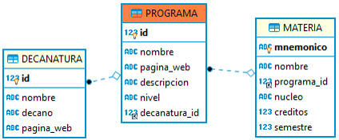

IMPORTANTE
Se le han dado los fuentes de un avance parcial de una plataforma para la administración del contenido educativo de la Escuela. En esta plataforma los usuarios podrán revisar el contenido educativo de la Escuela así como registrarse para distintos cursos. Adicionalmente, hay un usuario administrador del sistema que puede hacer modificaciones a la información almacenada.
Para el Sprint en curso, se han seleccionado las siguientes historias de usuario del Backlog de producto:
Recuerde que en el formato XML no se puede utilizar ‘<’ y ‘>’, por ejemplo al realizar comparaciones, utilice ‘<’ o ‘>’ respectivamente.
Como Usuario de la plataforma de la Escuela
Quiero Poder consultar las materias de un programa específico.
Para Obtener la información de las materias disponibles en el programa.
Criterio de aceptación: Se debe mostrar el mnemónico, nombre completo, núcleo al que pertenece, semestre sugerido y número de créditos de la materia. Las materias deben estar organizadas por semestre y luego por mnemónico.
Como Usuario de la plataforma
Quiero Poder realizar una búsqueda de la materia por palabras similares al nombre.
Para Conocer con rapidez la información específica de una materia en particular.
Criterio de aceptación: La consulta por “similares” debe coincidir si el nombre incluye la palabra especificada sin importar mayúsculas o minúsculas, ni la ubicación de la misma en el nombre. El reporte debe contener la misma información del reporte anterior donde se muestran las materias.
El modelo de base de datos y de clases asociados a la implementación parcial son los siguientes:

A partir de la aplicación base suministrada, debe realizar lo siguiente:
(20%) A partir de la especificación hecha en los métodos buscarMateriasPorPrograma y buscarMateriasPorSimilares de la fachada de servicios (la parte lógica de la aplicación), implemente sólo una prueba (la que considere más importante para validar las especificaciones y los criterios de aceptación). Siga el esquema usado en DecanaturaServicesTest para poblar la base de datos volátil y verificar el comportamiento de las operaciones de la lógica.
(40%) Implemente la historia de usuario #1, agregando todo lo que haga falta en la capa de presentación, lógica y de persistencia. La vista debe implementarse en materia.xhtml: Dados una decanatura y un programa, mostrar las materias disponibles en el plan de estudios de la Escuela.
(40%) Implemente la historia de usuario #2, agregando todo lo que haga falta en la capa de presentación, lógica y de persistencia. La vista se puede implementar en donde mejor considere que debería quedar: Mostrar el reporte de las materias que coinciden con la palabra clave.
Siga al pie de la letra estas indicaciones para la entrega del examen. EL HACER CASO OMISO DE ESTAS INSTRUCCIONES PENALIZARÁ LA NOTA.
Limpie el proyecto
Configure su usuario de GIT
Desde el directorio raíz (donde está este archivo README.md), haga commit de lo realizado.
Desde este mismo directorio, comprima todo con: (no olvide el punto al final en la segunda instrucción)
Abra el archivo ZIP creado, y rectifique que contenga lo desarrollado.
Suba el archivo antes creado (APELLIDO.NOMBRE.zip) en el espacio de moodle correspondiente.
¡IMPORTANTE! Conserve una copia de la carpeta y del archivo .ZIP.